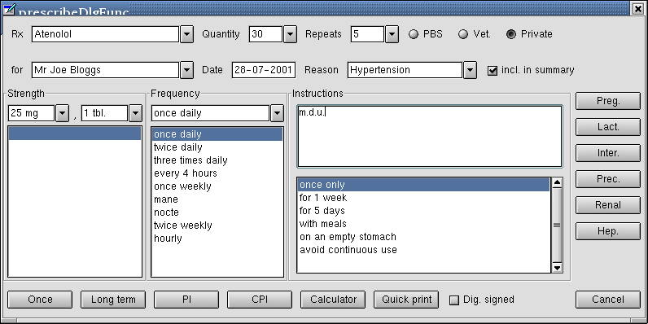

The prescription dialogue pops up after selecting a drug from the drug selection list control, or after hiting the quick script button. If invoked from the quick script button, all details will be blank but the patient name and the prescription date. If invoked from the drug selection control, the drug details will be filled in as well.
The Rx combo box shows the full text of the prescription item as selected from the drug selection control. It may be just a generic name or a brand name including formulation and strength. It responds to the following events in addition to the standard events:
Quantity / Repeats Obvious. Quantity and repeats / refills of the prescribed medication. Either select context sensitive choice from the combo drop down or enter arbitrary values at your own risk.
Refund radio buttons: arbitrary number of radio buttons to allow for different pharmaceutical benefit schemes; the example shows the typical Australian configuration.
Patient name field: although this dialogue is typically invoked from within GNUMed, and a patient is already preselected, this combo text control allows for entering a different name (which is consequently searched for in the database as soon as the control looses the focus). Purpose is to allow the user to write quick scripts for example when a consultatiion is interrupted by a phone call made by a different patient requesting an urgen script.
Date field: Allows to manually override the default date which is the current date. Depending on regulations and certain situations, predated and "retrospective" script can be neccessary
Reason: This field allows to connect one or more diagnoses to this medication. A double click allows to choose from the code browser dialogue (which lists the past and present diagnoses of this patient too). Dropping down the combo box reveals the active and long term problems of this patient. If free text is entered, the control searches the database for this diagnosis; if not found, the user is prompted for a code when the control ooses the focus. If more than one reason has to be entered, a comma separated free text will be accepted. Alternatively, a click with the right mouse button will present more options.
Include in summaryIf unticked, this prescription will not be listed in teh patient's prescription summary. Default is on.
StrengthThis combinations control consists in 3 elements. The first combo box allows
to enter the strength as packed, the second combo box allows to modify this (like 25 mg strength,
modification 1/2 tbl). The combo drop down of the stregth attribute is prefilled with the pre-packed
alternative of the selected generic drug, but can be overridden manually.
The list box below simply lists more verbose the alternative strength available; if clicked, the
selected option is pasted into the strength combo box. Single selection only.
Frequency: the combo box is prefille with the recommended frequncies for the selected drug. The list box below displays common administration alternatives which are pasted into the combo box by clicking / selecting. Single selection only.
Instructions: Free text field which allows to enter any length of custom instructions for
this prescription.
The list box below lists common instructions which are pasted into the text field by clicking / selecting.
Multiple selections are allowed.
Warning buttons: They are dynamically coloured if any of the categories might have a relevance for this prescription. Ideally, they will be contect sensitive (aware of gender, age, pregnancy / lactation status and diseases. When a button is clicked, details are displayed. If the user has an aversion against up-poppiong warning dialog boxes, he can configure GNUMed so that the colour / flashing of the warning buttons will be the only warning he gets.
Bottom button row: